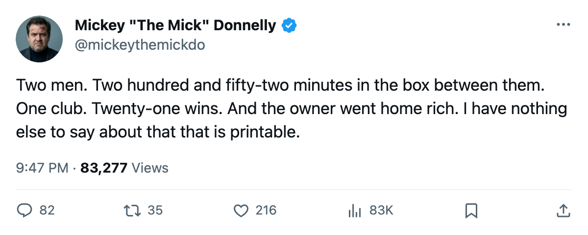
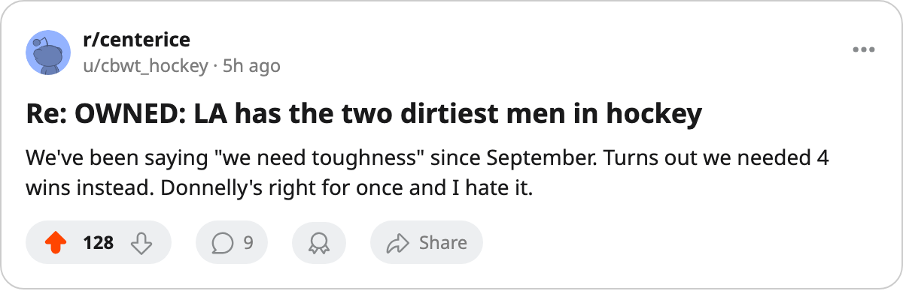

OWNED: LA HAS THE TWO DIRTIEST MEN IN HOCKEY AND HAVE NOT BEATEN DALLAS OR SAN JOSE ONCE
128 PIM and 124 PIM on one roster. 21 wins. $16.94 million in the till. The calendar has 8 days and nobody in LA is moving a single man.
 Mickey "The Mick" DonnellyColumnist, ex-goalie · The Penalty Box
Mickey "The Mick" DonnellyColumnist, ex-goalie · The Penalty Box
 Sean Avery77 has 128 penalty minutes.
Sean Avery77 has 128 penalty minutes.  Ian Laperriere75 has 124. They play on the same club. That club is
Ian Laperriere75 has 124. They play on the same club. That club is  Los Angeles Kings, and it has 21 wins, a $52.22 million payroll, and an owner who banked $16.94 million this season.
Los Angeles Kings, and it has 21 wins, a $52.22 million payroll, and an owner who banked $16.94 million this season.
21 wins. A 21-32-7 record. A four-game losing streak with the calendar telling you there are 8 days until what it has as the trade deadline. $0.80 million per point, the 14th-worst rate in the league. That is what leading the league in penalty minutes in both first and second place buys you.
You do not buy a single regulation win against  Dallas Stars this season. Zero. The season series reads 0-3-0 with two overtime losses. You do not buy a win against
Dallas Stars this season. Zero. The season series reads 0-3-0 with two overtime losses. You do not buy a win against  San Jose Sharks either. 0-3-0, one overtime loss, four meetings, nothing in the win column. Against
San Jose Sharks either. 0-3-0, one overtime loss, four meetings, nothing in the win column. Against  Mighty Ducks of Anaheim you scraped one win in five games. You beat
Mighty Ducks of Anaheim you scraped one win in five games. You beat  Phoenix Coyotes three times because Phoenix Coyotes is the only team in your division with fewer points than you, and even then it took a 3-0-1 line to prove it.
Phoenix Coyotes three times because Phoenix Coyotes is the only team in your division with fewer points than you, and even then it took a 3-0-1 line to prove it.
The room is at 92.1. Twelfth in the league. Happy. The owner took $16.94 million out of the building and went home. 13,655 people showed up per game at $78 a ticket and watched two men sit in the box 1.88 and 1.82 minutes per night while the scoreboard told them nothing.
 Zigmund Palffy87 put up 104 points.
Zigmund Palffy87 put up 104 points.  Mike Cammalleri83 is up six on the Bureau's Development Index at 48 points in 47 games. These are not bad hockey players. They are playing on a team that has decided its identity is two men in the box while everybody else figures out how to win games.
Mike Cammalleri83 is up six on the Bureau's Development Index at 48 points in 47 games. These are not bad hockey players. They are playing on a team that has decided its identity is two men in the box while everybody else figures out how to win games.
You trade one of them. You take the PIM, the 128 or the 124, whatever the other GM thinks he needs for April, and you take a defenseman who can actually play in your own end or a winger who finishes checks instead of starting fights. You have 8 days. Los Angeles Kings has no reason to win tonight or tomorrow. The owner has no reason to fire anybody. The room is at 92.1. The only number that moves is the one on the balance sheet, and it moved up.
Skip the $78 ticket. Skip the 13,655 empty seats you pretend are someone else's problem. Watch a club spend $52.22 million, put a 1.88 and a 1.82 on the board, and call it an identity. It is a receipt.
Los Angeles Kings will not trade either man. The deadline will pass. Avery will still be here. Laperriere will still be here. The box score will still read 21 somewhere in the win column and the profit will still be the only thing that grew all season. And I will be here in April, writing the same words about a different club. You cannot buy wins at the penalty box. I have run out of ways to say it that do not sound like a broken record.

